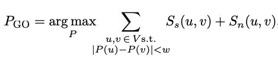
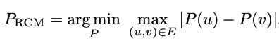

FlatNav
FlatNav is a fast and header-only graph-based index for Approximate Nearest Neighbor Search (ANNS). Thanks to various graph re-ordering implementation techniques from Coleman et al., optimization using SIMD intrinsics, and the design that leverages a single-layered in-memory index, FlatNav provides billion-scale vector search with high recall, SoTA query latency and significant memory savings.
Installation
FlatNav is implemented in C++ with a complete Python extension with cereal as the only external dependency. This is a header-only library, so there is nothing to build. You can just include the necessary headers in your existing code.
FlatNav is supported on x86-64 machines on linux and MacOS (we can extend this to windows if there is sufficient interest). To get the C++ library working and run examples under the tools directory, you will need
C++17 compiler with OpenMP support (version >= 2.0)
CMake (version >= 3.14)
We provide some helpful scripts for installing the above in the bin directory.
To generate the library with CMake and compile examples, run
$ git clone https://github.com/BlaiseMuhirwa/flatnav.git --recurse-submodules
$ cd flatnav
$ ./bin/build.sh -e
You can get all options available with the build.sh script by passing it the -h argument.
This will display all available build options:
Usage ./build.sh [OPTIONS]
Available Options:
-t, --tests: Build tests
-e, --examples: Build examples
-v, --verbose: Make verbose
-b, --benchmark: Build benchmarks
-bt, --build_type: Build type (Debug, Release, RelWithDebInfo, MinSizeRel)
-nmv, --no_simd_vectorization:Disable SIMD instructions
-h, --help: Print this help message
Example Usage:
./build.sh -t -e -v
To build the Python bindings, follow instructions here. There are also examples for how to use the library to build an index and run queries on top of it here.
Support for SIMD Extensions
We currently support SIMD extensions for certain platforms as detailed below.
Operation |
x86_64 |
arm64v8 |
Apple silicon |
|---|---|---|---|
FP32 Inner product |
SSE, AVX, AVX512 |
No SIMD support |
No SIMD support |
FP32 L2 distance |
SSE, AVX, AVX512 |
No SIMD support |
No SIMD support |
UINT8 L2 distance |
AVX512 |
No SIMD support |
No SIMD support |
INT8 L2 distance |
SSE |
No SIMD support |
No SIMD support |
Getting Started in Python
Once you’ve built the python bindings and you have a dataset you want to index as a numpy array, you can construct the index as shown below. This will allocate memory and create a directed graph with vectors as nodes.
import numpy as np
import flatnav
from flatnav.data_type import DataType
# Get your numpy-formatted dataset.
dataset_size = 1_000_000
dataset_dimension = 128
dataset_to_index = np.random.randn(dataset_size, dataset_dimension)
# Define index construction parameters.
distance_type = "l2"
max_edges_per_node = 32
ef_construction = 100
num_build_threads = 16
# Create index configuration and pre-allocate memory
index = flatnav.index.create(
distance_type=distance_type,
index_data_type=DataType.float32,
dim=dim,
dataset_size=dataset_size,
max_edges_per_node=max_edges_per_node,
verbose=True,
collect_stats=True,
)
index.set_num_threads(num_build_threads)
# Now index the dataset
index.add(data=dataset_to_index, ef_construction=ef_construction)
Note that we specified DataType.float32 to indicate that we want to build an index with vectors represented with float type. If you want to use a different precision, such as uint8_t or int8_t (which are the only other ones currently supported), you can use DataType.uint8 or DataType.int8.
The distance type can either be l2 or angular. The collect_stats flag will record the number of distance evaluations.
To query the index we just created by generating IID vectors from the standard normal distribution, we do it as follows
# Set query-time parameters
k = 100
ef_search = 100
# Run k-NN query with a single thread.
index.set_num_threads(1)
queries = np.random.randn(1000, dataset_to_index.shape[1])
for query in queries:
distances, indices = index.search_single(
query=query,
ef_search=ef_search,
K=k,
)
You can parallelize the search by setting the number of threads to a desired number and using a different API that also returns the exact same results as search_single.
index.set_num_threads(16)
distances, indices = index.search(queries=queries, ef_search=ef_search, K=k)
Getting Started in C++
As mentioned earlier, there is nothing to build since this is header-only. We will translate the above Python code in C++ to illustrate how to use the C++ API.
#include <cstdint>
#include <flatnav/index/Index.h>
#include <flatnav/distances/SquaredL2Distance.h>
#include <flatnav/distances/DistanceInterface.h>
template <typename dist_t>
void run_knn_search(Index<dist_t, int>>* index, float *queries, int* gtruth,
int ef_search, int K, int num_queries, int num_gtruth, int dim) {
float mean_recall = 0;
for (int i = 0; i < num_queries; i++) {
float *q = queries + dim * i;
int *g = gtruth + num_gtruth * i;
std::vector<std::pair<float, int>> result =
index->search(q, K, ef_search);
float recall = 0;
for (int j = 0; j < K; j++) {
for (int l = 0; l < K; l++) {
if (result[j].second == g[l]) {
recall = recall + 1;
}
}
}
recall = recall / K;
mean_recall = mean_recall + recall;
}
}
int main(int argc, char** argv) {
uint32_t dataset_size = 1000000;
uint32_t dataset_dimension = 128;
// We skip the random data generation, but you can do that with std::mt19937, std::random_device
// and std::normal_distribution
// std::vector<float> dataset_to_index;
uint32_t max_edges_per_node = 32;
uint32_t ef_construction = 100;
// Create an index with l2 distance
auto distance = SquaredL2Distance<>::create(dataset_dimension);
auto* index = new Index<SquaredL2Distance<DataType::float32>>, int>(
/* dist = */ std::move(distance), /* dataset_size = */ dataset_size,
/* max_edges_per_node = */ max_edges_per_node);
index->setNumThreads(build_num_threads);
std::vector<int> labels(dataset_size);
std::iota(labels.begin(), labels.end(), 0);
index->template addBatch<float>(/* data = */ (void *)dataset_to_index,
/* labels = */ labels,
/* ef_construction */ ef_construction);
// Now query the index and compute the recall
// We assume you have a ground truth (int*) array and a queries (float*) array
uint32_t ef_search = 100;
uint32_t k = 100;
uint32_t num_queries = 1000;
uint32_t num_gtruth = 1000;
// Query the index and compute the recall.
run_knn_search(index, queries, gtruth, ef_search, k, num_queries, num_gtruth, dataset_dimension);
}
Near Neighbor Graph Reordering
For a deeper analysis on graph re-ordering, refer to the original paper linked above.
At a high level, graph re-ordering constructs a labeling function \(P: V \to \{1, 2, ..., n \}\) that maps connected nodes to labels that are close to each other such that node \(v\) is assigned to memory location \(P(v)\). The goal of this construction is to improve cache efficiency.
Two graph re-ordering strategies are available in FlatNav, namely
GOrder
Reverse Cuthill Mckee (RCM)
GOrder constructs \(P\) by maximizing the number of shared edges among node blocks of size \(w\). This improves cache efficiency because a block containing many overlapping nodes is likely to avoid cache misses since each node’s neighbors are stored no further than \(w\) memory locations away. Formally, \(P_{GO}\) is expressed as

where \(S_s(u,v)\) indicates whether the two nodes have a direct link and \(S_n(u,v)\) indicates how many neighbors they share in common.
RCM, on the other hand, minimizes the bandwidth of the adjacency matrix, which is sparse and symmetric where bandwidth is the maximum distance of a non-zero element to the main diagonal. Formally, \(P_{RCM}\) is given by

which effectively minimizes the maximum label assignment difference between any two connected nodes.
To run graph re-ordering,
Construct a near neighbor index from a given data file. See the construct_npy.cpp for a C++ example that builds an index from a
.npyfile and serializes it to disk.Re-order the nodes in the graph by applying one of the available graph-reordering methods among Reverse Cuthill Mckee (RCM) or Gorder (graph-order). A C++ example that defaults to the
gordermethod can be found in the query_npy.cpp.Query a re-ordered index. This will also compute the recall and the average query latency.
To re-order the index after constructing it in Python can be done in one line of code
...
# You can also chain "gorder" and "rcm" by using ["gorder", "rcm"]
index.reorder(strategies=["gorder"])
Datasets from ANN-Benchmarks
ANN-Benchmarks provide HDF5 files for a standard benchmark of near-neighbor datasets, queries and ground-truth results. To index any of these datasets you can use the construct_npy.cpp and query_npy.cpp files linked above.
To generate the ANNS benchmark datasets, run the following script
$ ./bin/download_anns_datasets.sh <dataset-name> [--normalize]
For datasets that use the angular/cosine similarity, you will need to use --normalize option so that the distances are computed correctly.
Available dataset names include:
_ mnist-784-euclidean
_ sift-128-euclidean
_ glove-25-angular
_ glove-50-angular
_ glove-100-angular
_ glove-200-angular
_ deep-image-96-angular
_ gist-960-euclidean
_ nytimes-256-angular
Experimental API and Future Extensions
You can find the current work under development under the development-features directory. While some of these features may be usable, they are not guarranteed to be stable. Stable features will be expected to be part of the PyPI releases. The most notable on-going extension that’s under development is product quantization.